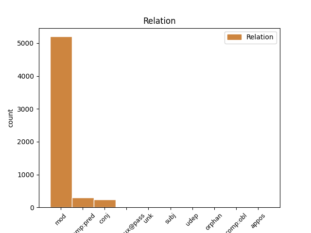
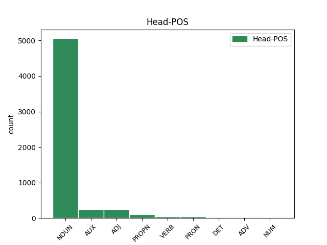
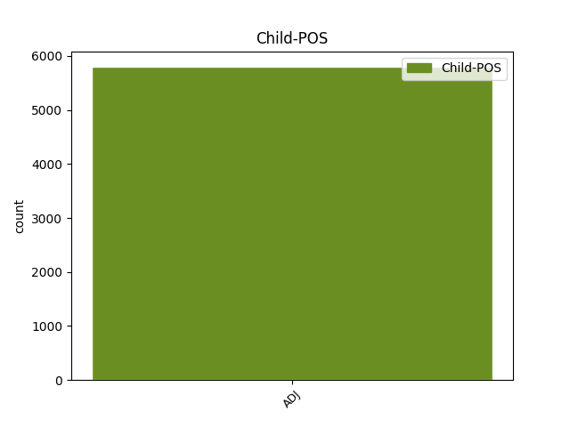

Distribution of features within this leaf



Agreement Rules sorted by frequency.
- When the dependent token is the modifer(mod) of the head token, and the dependent token is ADJ.
1 Keď _ _ _ _ 0 _ _ _
2 zistil _ _ _ _ 0 _ _ _
3 , _ _ _ _ 0 _ _ _
4 že _ _ _ _ 0 _ _ _
5 je _ _ _ _ 0 _ _ _
6 obkľúčený _ _ _ _ 0 _ _ _
7 a _ _ _ _ 0 _ _ _
8 má _ _ _ _ 0 _ _ _
9 sa _ _ _ _ 0 _ _ _
10 vzdať _ _ _ _ 0 _ _ _
11 , _ _ _ _ 0 _ _ _
12 zabil _ _ _ _ 0 _ _ _
13 sa _ _ _ _ 0 _ _ _
14 ručným ručný ADJ AAis7x Animacy=Inan|Case=Ins|Degree=Pos|Gender=Masc|Number=Sing 15 mod _ _
15 granátom granát NOUN SSis7 Animacy=Inan|Case=Ins|Gender=Masc|Number=Sing 0 _ _ _
16 . _ _ _ _ 0 _ _ _
1 Avšak _ _ _ _ 0 _ _ _
2 rodine _ _ _ _ 0 _ _ _
3 malého _ _ _ _ 0 _ _ _
4 paviána _ _ _ _ 0 _ _ _
5 sa _ _ _ _ 0 _ _ _
6 nepáčilo _ _ _ _ 0 _ _ _
7 , _ _ _ _ 0 _ _ _
8 ako _ _ _ _ 0 _ _ _
9 sa _ _ _ _ 0 _ _ _
10 Jane _ _ _ _ 0 _ _ _
11 správa _ _ _ _ 0 _ _ _
12 k _ _ _ _ 0 _ _ _
13 ich _ _ _ _ 0 _ _ _
14 mláďaťu _ _ _ _ 0 _ _ _
15 a _ _ _ _ 0 _ _ _
16 nazlostení nazlostený ADJ Gtmp1x Animacy=Anim|Case=Nom|Degree=Pos|Gender=Masc|Number=Plur|Polarity=Pos|VerbForm=Part|Voice=Pass 17 comp:pred _ _
17 začali začať VERB VLdpcm+ Animacy=Anim|Aspect=Perf|Gender=Masc|Number=Plur|Polarity=Pos|Tense=Past|VerbForm=Part 0 _ _ _
18 dievčinu _ _ _ _ 0 _ _ _
19 prenasledovať _ _ _ _ 0 _ _ _
20 . _ _ _ _ 0 _ _ _
1 Otrasený otrasený ADJ AAms1x Animacy=Anim|Case=Nom|Degree=Pos|Gender=Masc|Number=Sing 0 _ _ _
2 , _ _ _ _ 0 _ _ _
3 ale _ _ _ _ 0 _ _ _
4 zdravý zdravý ADJ AAms1x Animacy=Anim|Case=Nom|Degree=Pos|Gender=Masc|Number=Sing 1 conj _ _
5 sa _ _ _ _ 0 _ _ _
6 z _ _ _ _ 0 _ _ _
7 nej _ _ _ _ 0 _ _ _
8 vymotal _ _ _ _ 0 _ _ _
9 . _ _ _ _ 0 _ _ _
1 Vláda _ _ _ _ 0 _ _ _
2 bude _ _ _ _ 0 _ _ _
3 hľadať _ _ _ _ 0 _ _ _
4 spôsoby _ _ _ _ 0 _ _ _
5 legislatívnej _ _ _ _ 0 _ _ _
6 úpravy _ _ _ _ 0 _ _ _
7 , _ _ _ _ 0 _ _ _
8 aby _ _ _ _ 0 _ _ _
9 v _ _ _ _ 0 _ _ _
10 Národnej _ _ _ _ 0 _ _ _
11 rade _ _ _ _ 0 _ _ _
12 SR _ _ _ _ 0 _ _ _
13 neboli byť AUX VLepci- Animacy=Inan|Aspect=Imp|Gender=Masc|Number=Plur|Polarity=Neg|Tense=Past|VerbForm=Part 0 _ _ _
14 prijímané prijímaný ADJ Gtip1x Animacy=Inan|Case=Nom|Degree=Pos|Gender=Masc|Number=Plur|Polarity=Pos|VerbForm=Part|Voice=Pass 13 comp:aux@pass _ _
15 zákony _ _ _ _ 0 _ _ _
16 s _ _ _ _ 0 _ _ _
17 nekrytými _ _ _ _ 0 _ _ _
18 rozpočtovými _ _ _ _ 0 _ _ _
19 dôsledkami _ _ _ _ 0 _ _ _
20 . _ _ _ _ 0 _ _ _
1 Stoly _ _ _ _ 0 _ _ _
2 a _ _ _ _ 0 _ _ _
3 stoličky _ _ _ _ 0 _ _ _
4 boli _ _ _ _ 0 _ _ _
5 prevrhnuté _ _ _ _ 0 _ _ _
6 , _ _ _ _ 0 _ _ _
7 vázy váza NOUN SSfp1 Case=Nom|Gender=Fem|Number=Plur 0 _ _ _
8 rozbité rozbitý ADJ Gtfp1x Case=Nom|Degree=Pos|Gender=Fem|Number=Plur|Polarity=Pos|VerbForm=Part|Voice=Pass 7 orphan _ LDeriv=rozbiť
9 a _ _ _ _ 0 _ _ _
10 obrazy _ _ _ _ 0 _ _ _
11 viseli _ _ _ _ 0 _ _ _
12 nakrivo _ _ _ _ 0 _ _ _
13 . _ _ _ _ 0 _ _ _
1 Ostatní ostatný ADJ NAmp1 Animacy=Anim|Case=Nom|Gender=Masc|Number=Plur|NumType=Mult 3 subj _ _
2 ho _ _ _ _ 0 _ _ _
3 nasledovali nasledovať VERB VLepcm+ Animacy=Anim|Aspect=Imp|Gender=Masc|Number=Plur|Polarity=Pos|Tense=Past|VerbForm=Part 0 _ _ _
4 . _ _ _ _ 0 _ _ _
1 Tarzan _ _ _ _ 0 _ _ _
2 podrástol _ _ _ _ 0 _ _ _
3 a _ _ _ _ 0 _ _ _
4 veľmi _ _ _ _ 0 _ _ _
5 rád rád ADJ AUms1x Animacy=Anim|Case=Nom|Degree=Pos|Gender=Masc|Number=Sing 8 udep _ _
6 si _ _ _ _ 0 _ _ _
7 matku _ _ _ _ 0 _ _ _
8 doberal doberať VERB VLescm+ Animacy=Anim|Aspect=Imp|Gender=Masc|Number=Sing|Polarity=Pos|Tense=Past|VerbForm=Part 0 _ _ _
9 . _ _ _ _ 0 _ _ _
1 Na _ _ _ _ 0 _ _ _
2 čistinke _ _ _ _ 0 _ _ _
3 neostal ostať VERB VLdscm- Animacy=Anim|Aspect=Perf|Gender=Masc|Number=Sing|Polarity=Neg|Tense=Past|VerbForm=Part 0 _ _ _
4 ani _ _ _ _ 0 _ _ _
5 jedinký jedinký ADJ NAms1 Animacy=Anim|Case=Nom|Gender=Masc|Number=Sing|NumType=Mult 3 unk _ SpaceAfter=No
6 . _ _ _ _ 0 _ _ _
1 “ _ _ _ _ 0 _ _ _
2 Ale _ _ _ _ 0 _ _ _
3 keď _ _ _ _ 0 _ _ _
4 kapitán _ _ _ _ 0 _ _ _
5 Hook _ _ _ _ 0 _ _ _
6 na _ _ _ _ 0 _ _ _
7 tom _ _ _ _ 0 _ _ _
8 trvá _ _ _ _ 0 _ _ _
9 ! _ _ _ _ 0 _ _ _
10 “ _ _ _ _ 0 _ _ _
11 vysvetľoval _ _ _ _ 0 _ _ _
12 John john PROPN SSms1:r Animacy=Anim|Case=Nom|Gender=Masc|Number=Sing 0 _ _ _
13 , _ _ _ _ 0 _ _ _
14 starší starý ADJ AAms1y Animacy=Anim|Case=Nom|Degree=Cmp|Gender=Masc|Number=Sing 12 appos _ _
15 z _ _ _ _ 0 _ _ _
16 Wendiných _ _ _ _ 0 _ _ _
17 bratov _ _ _ _ 0 _ _ _
18 . _ _ _ _ 0 _ _ _
1 Mladým mladý ADJ AAmp3x Animacy=Anim|Case=Dat|Degree=Pos|Gender=Masc|Number=Plur 3 comp:obl _ _
2 som _ _ _ _ 0 _ _ _
3 vyrozumel vyrozumieť VERB VLdsam+ Animacy=Anim|Aspect=Perf|Gender=Masc|Number=Sing|Polarity=Pos|Tense=Past|VerbForm=Part 0 _ _ _
4 z _ _ _ _ 0 _ _ _
5 tváre _ _ _ _ 0 _ _ _
6 , _ _ _ _ 0 _ _ _
7 že _ _ _ _ 0 _ _ _
8 ani _ _ _ _ 0 _ _ _
9 oni _ _ _ _ 0 _ _ _
10 sa _ _ _ _ 0 _ _ _
11 dobre _ _ _ _ 0 _ _ _
12 nevyspali _ _ _ _ 0 _ _ _
13 . _ _ _ _ 0 _ _ _
Disagree Examples:
1 Od _ _ _ _ 0 _ _ _
2 malička _ _ _ _ 0 _ _ _
3 mi _ _ _ _ 0 _ _ _
4 bolo byť AUX VLescn+ Aspect=Imp|Gender=Neut|Number=Sing|Polarity=Pos|Tense=Past|VerbForm=Part 0 _ _ _
5 z _ _ _ _ 0 _ _ _
6 každej _ _ _ _ 0 _ _ _
7 strany _ _ _ _ 0 _ _ _
8 vštepovaných vštepovaný ADJ Gtfp2x Case=Gen|Degree=Pos|Gender=Fem|Number=Plur|Polarity=Pos|VerbForm=Part|Voice=Pass 4 comp:aux@pass _ _
9 niekoľko _ _ _ _ 0 _ _ _
10 vecí _ _ _ _ 0 _ _ _
11 . _ _ _ _ 0 _ _ _
1 Dôraz _ _ _ _ 0 _ _ _
2 tentoraz _ _ _ _ 0 _ _ _
3 patrí _ _ _ _ 0 _ _ _
4 na _ _ _ _ 0 _ _ _
5 slovo slovo NOUN SSns4 Case=Acc|Gender=Neut|Number=Sing 0 _ _ _
6 jedinečný jedinečný ADJ AAis4x Animacy=Inan|Case=Acc|Degree=Pos|Gender=Masc|Number=Sing 5 mod _ SpaceAfter=No
7 . _ _ _ _ 0 _ _ _
1 Autografy _ _ _ _ 0 _ _ _
2 — _ _ _ _ 0 _ _ _
3 nápisy _ _ _ _ 0 _ _ _
4 obsahujúce _ _ _ _ 0 _ _ _
5 predovšetkým _ _ _ _ 0 _ _ _
6 meno meno NOUN SSns4 Case=Acc|Gender=Neut|Number=Sing 0 _ _ _
7 píšuceho píšuci ADJ Gkms2x Animacy=Anim|Case=Gen|Degree=Pos|Gender=Masc|Number=Sing|Polarity=Pos|VerbForm=Part|Voice=Act 6 mod _ SpaceAfter=No
8 . _ _ _ _ 0 _ _ _
1 Štyridsať _ _ _ _ 0 _ _ _
2 dva _ _ _ _ 0 _ _ _
3 takýchto _ _ _ _ 0 _ _ _
4 odliatkov _ _ _ _ 0 _ _ _
5 bolo byť AUX VLescn+ Aspect=Imp|Gender=Neut|Number=Sing|Polarity=Pos|Tense=Past|VerbForm=Part 0 _ _ _
6 poslaných poslaný ADJ Gtip2x Animacy=Inan|Case=Gen|Degree=Pos|Gender=Masc|Number=Plur|Polarity=Pos|VerbForm=Part|Voice=Pass 5 comp:aux@pass _ _
7 do _ _ _ _ 0 _ _ _
8 Moskvy _ _ _ _ 0 _ _ _
9 , _ _ _ _ 0 _ _ _
10 kde _ _ _ _ 0 _ _ _
11 ich _ _ _ _ 0 _ _ _
12 skúmal _ _ _ _ 0 _ _ _
13 I _ _ _ _ 0 _ _ _
14 . _ _ _ _ 0 _ _ _
15 A _ _ _ _ 0 _ _ _
16 . _ _ _ _ 0 _ _ _
17 Ščepkin _ _ _ _ 0 _ _ _
18 , _ _ _ _ 0 _ _ _
19 autor _ _ _ _ 0 _ _ _
20 prvej _ _ _ _ 0 _ _ _
21 práce _ _ _ _ 0 _ _ _
22 o _ _ _ _ 0 _ _ _
23 nich _ _ _ _ 0 _ _ _
24 . _ _ _ _ 0 _ _ _
1 Zo _ _ _ _ 0 _ _ _
2 Škandinávie _ _ _ _ 0 _ _ _
3 je _ _ _ _ 0 _ _ _
4 známe _ _ _ _ 0 _ _ _
5 časté _ _ _ _ 0 _ _ _
6 zamieňanie _ _ _ _ 0 _ _ _
7 toporov _ _ _ _ 0 _ _ _
8 s _ _ _ _ 0 _ _ _
9 poriskom porisko NOUN SSns7 Case=Ins|Gender=Neut|Number=Sing 0 _ _ _
10 čiastočne _ _ _ _ 0 _ _ _
11 vysunutým vysunutý ADJ Gtis7x Animacy=Inan|Case=Ins|Degree=Pos|Gender=Masc|Number=Sing|Polarity=Pos|VerbForm=Part|Voice=Pass 9 mod _ _
12 nad _ _ _ _ 0 _ _ _
13 čepeľ _ _ _ _ 0 _ _ _
14 . _ _ _ _ 0 _ _ _